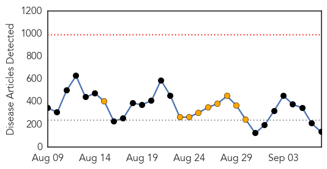
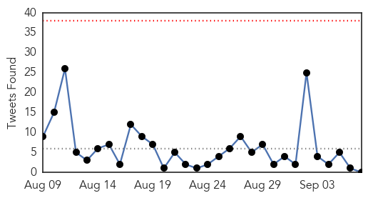
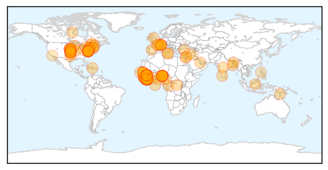
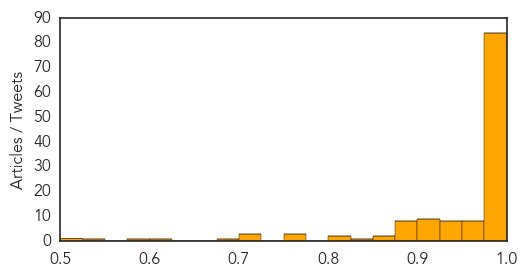
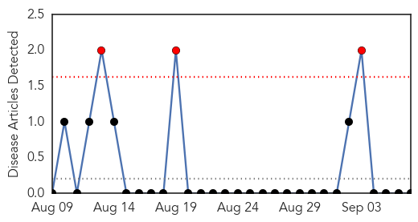

Ebola
30-Day Web Trend
0 alerts, 9 warnings

30-Day Twitter Trend
1 alerts, 1 warnings

Article Locations
Article Confidences
Top Articles:
- 1.000
- Aid agencies say Sierra Leone lockdown over Ebola will backfire
- 1.000
- Sierra Leone Imposes Ebola Virus Lockdown
- 1.000
- Ebola epidemic hits close to home for Minnesota's West African community
- 1.000
- Aid agencies say Sierra Leone lockdown over Ebola will backfire
- 1.000
- Ebola virus disease outbreakWest Africa
- 1.000
- Ebola cases could go ‘unattended’ as aid agencies warn against Sierra Leone lockdown
- 1.000
- Experimental Ebola vaccines protect monkeys from epidemic for 10 months
- 1.000
- Anger mounts as Ebola death toll tops 1,000 in Liberia
- 1.000
- Obama: U.S. must fight Ebola now or face long-term risk
- 0.999
- Experimental Ebola Vaccine Shown to Work During Trial
- 0.999
- Experimental Ebola Vaccine Shown to Work During Trial
- 0.999
- Sierra Leone orders 3-day shutdown to stall Ebola – BorneoPost Online
- 0.999
- Experimental Ebola Vaccine Shown to Work During Trial
- 0.999
- 'Big Pharma' slammed for lack of Ebola drug
- 0.999
- 'International Rescue Call' To Halt Ebola Epidemic
- 0.999
- US doctor with Ebola ‘improving’
- 0.999
- Sierra Leone orders 3-day shutdown over Ebola
- 0.999
- Recruitment banned from Ebola-affected countries
- 0.999
- Experimental Ebola Vaccine Shown to Work During Trial
- 0.999
- Ebola vaccine tests on monkeys show promise
- 0.999
- Sierra Leone Plans Ebola Lockdown, Experts Warn Of Repercussions
- 0.999
- Ebola virus precautions added to back-to-school advice on campus
- 0.999
- Sierra Leone Orders Ebola Lockdown
- 0.999
- MSF: Sierra Leone lockdown will not stem Ebola spread
- 0.999
- Experimental Ebola Vaccine Shown to Work During Trial
- 0.999
- Sierra Leone plans nationwide lockdown to stop Ebola
- 0.999
- Despite Ebola, 70,000 Nigerian Hajis coming
- 0.999
- Sierra Leone plans lockdown to fight Ebola
- 0.999
- J & J announce fast track of Ebola vaccine
- 0.999
- RPT-Ebola outbreak stirs anger in fragile Liberia
- 0.999
- The Chosun Ilbo (English Edition): Daily News from Korea
- 0.999
- Ebola scare prompts hotel lock down
- 0.998
- Novel Ebola Vaccine Shows Potential in Monkey Trial
- 0.998
- EU pledges 140m euros in Ebola aid
- 0.998
- Sierra Leone on Lockdown In The Midst Of Ebola Outbreak - Dumb Out
- 0.998
- Ebola outbreak stirs anger in fragile Liberia
- 0.998
- Hilton Hotel lockdown lifted in Saint John
- 0.998
- Hilton Hotel lockdown lifted in Saint John
- 0.997
- Zeal, devotion guides volunteers to Ebola crisis
- 0.997
- Sierra Leone issues 3-day quarantine
- 0.997
- MSF reaction to Sierra Leone '4-day lockdown' plan - Sierra Leone
- 0.997
- Canadian Ebola mobile laboratory team heads back to Sierra Leone
- 0.997
- Ebola: AU convenes emergency meeting Monday
- 0.996
- Obama: U.S. military to provide equipment, resources to battle Ebola epidemic in Africa
- 0.996
- Canadian Ebola lab returning to Sierra Leone
- 0.996
- Doctor: Ebola virus cases may be underreported by as much ‘double or triple’
- 0.996
- Nigerian woman quarantined in Jerusalem found to be Ebola-free: National And World News
- 0.996
- Modern Healthcare Modern Healthcare business news, research, data and events
- 0.995
- Hopes Raised As Ebola Vaccine Protects Monkeys For 10 Months
- 0.995
- Ebola outbreak: Barack Obama says US military to join fight against virus in West Africa
Showing top 50 articles...
Top Tweets:
- 0.750
- RT: Sierra Leone government defends Ebola lockdown http://t.co/GpH3uRJ6Wo
- 0.631
- RT: Ebola Death Toll Tops 2,000: WHO http://t.co/OrFY4v4K5k
Yellow Fever
30-Day Web Trend
3 alerts, 0 warnings

30-Day Twitter Trend
0 alerts, 0 warnings

Article Locations

Article Confidences

Top Articles:
-
No articles found for Sep 07, 2014
Top Tweets:
-
No tweets found for Sep 07, 2014